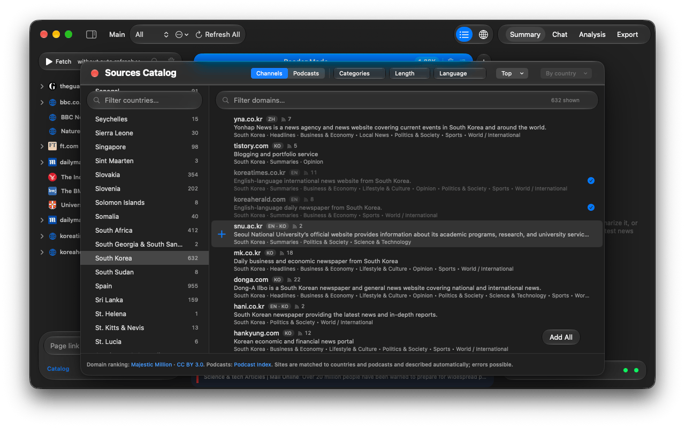

Handbook · Sources
Using the Sources Catalog
Browse thousands of news sites and podcasts by country, language and type and add them in one click.
The app ships with a catalog of news websites and podcasts from around the world. Open it with the Catalog link at the bottom of the sidebar. The same list is browsable on this site: News Websites Catalog.

Find sites
- Choose Channels (text news) or Podcasts at the top.
- Pick a country in the Countries column, or All Countries. Type in Filter countries… to jump.
- Narrow with the chips:
- Categories: politics, business, sport and so on.
- Length: Long reads, Summaries or Headlines, i.e. how much text the feed carries.
- Language.
- Top: only the biggest sites, ranked By country or By language.
- Type in Filter domains… to search by address. Each site has a one-line description to help when you don't know the outlet.
Add sites
- Preview shows the site's latest headlines before you add it.
- Add adds a single site with all its feeds. Add All adds every site currently shown.
- Remove from Sources takes a site out again. Its news is deleted, favorites are kept.
Countries, categories and descriptions are assigned automatically and can be wrong. If a site is missing, add it by its address: see Adding your own sources.
The free version fetches up to 100 sources. See Free and full version.
Questions or problems? Open an issue in the
GitHub repository.